sector52 supernovae (28 total)
Each figure has three panels. The top panel shows the transient light curve, the middle panel shows the local background (estimated in an annulus), and the bottom panel shows a "background-model corrected" light curve. Details about the background model are in the README.
The vertical red line marks the time of discovery reported to TNS. Other useful metadata from TNS is in the figure title.
Note that the top and bottom panel are in magnitudes, while the middle panel is in differential flux units. The magnitudes are calibrated to the flux in the reference image used for image subtraction. Thus, flux from the host galaxy is included in these magnitudes.
3-sigma upper limits are plotted as triangles with no errorbars. A typical limiting magnitude is 19.6 in 30 minutes or 18.4 in 200 seconds (for low backgrounds).
The links allow you to download the light curve data as a text file.
More details in the README.
2022mds
 2022kyv
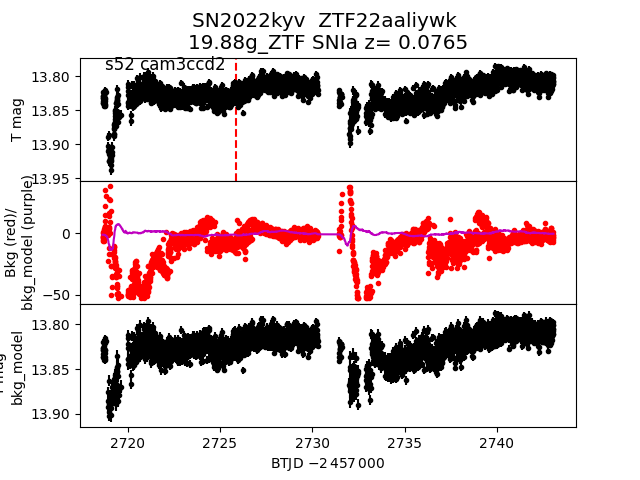
2022kia
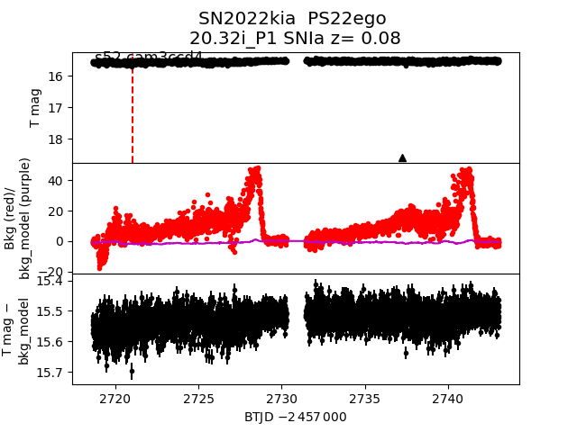
2022mgt
2022kyv
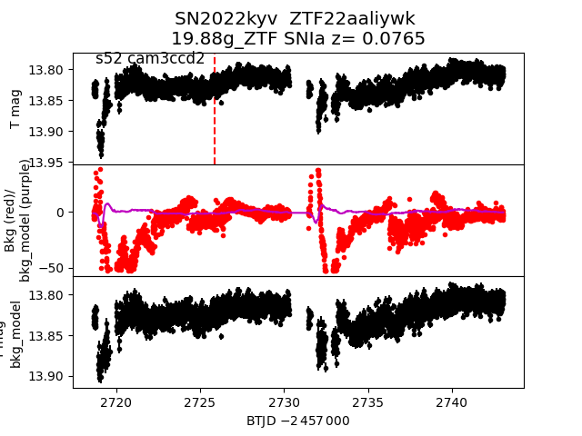
2022kia
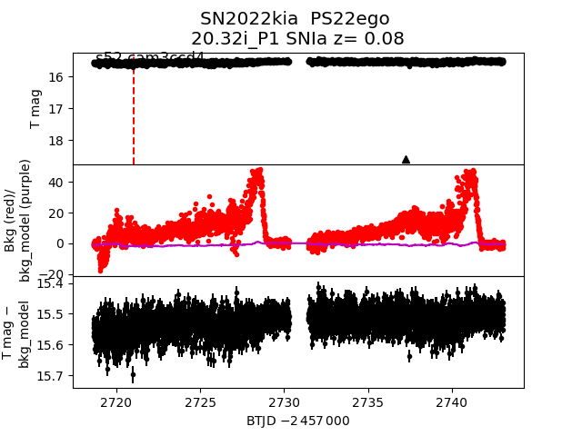
2022mgt
 2022khr
2022khr
 2022mnz
2022mnz
 2022lzm
2022lzm
 2022mhg
2022mhg
 2022lxd
2022lxd
 2022kyw
2022kyw
 2022kkt
2022kkt
 2022knz
2022knz
 2022kie
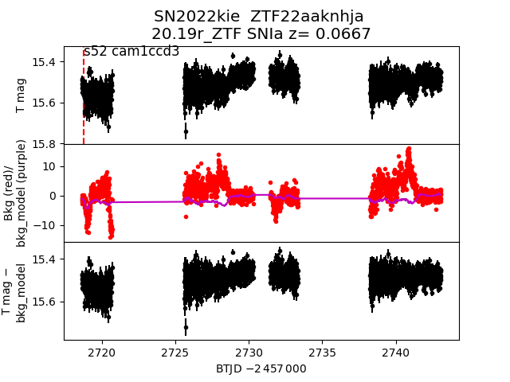
2022muy
2022kie
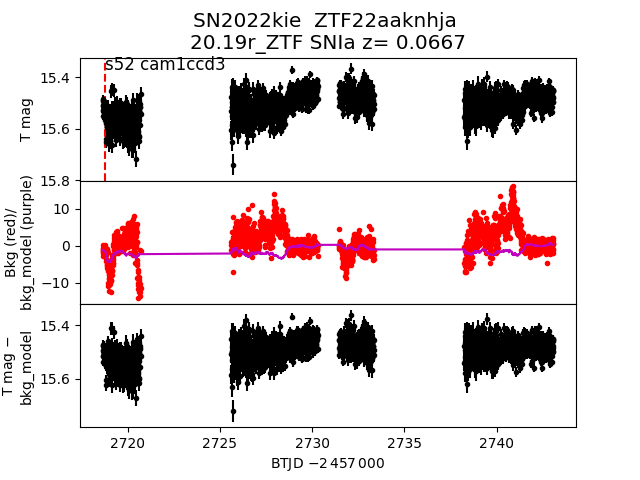
2022muy
 2022kpc
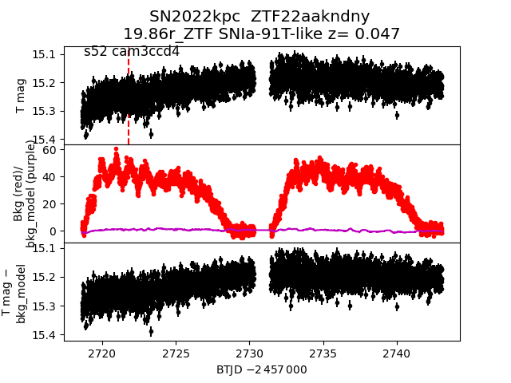
2022kla
2022kpc
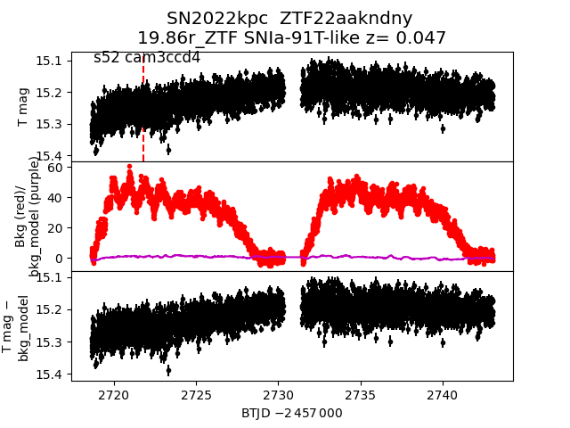
2022kla
 2022lfg
2022lfg
 2022lez
2022lez
 2022khy
2022khy
 2022mbq
2022mbq
 2022lmr
2022lmr
 2022khf
2022khf
 2022klm
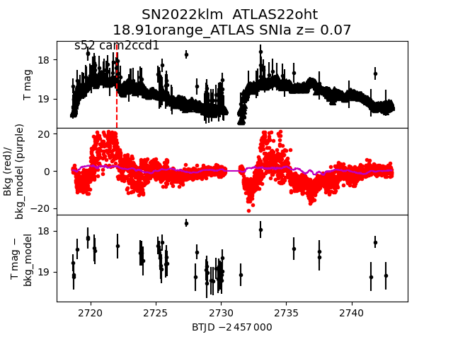
2022myl
2022klm
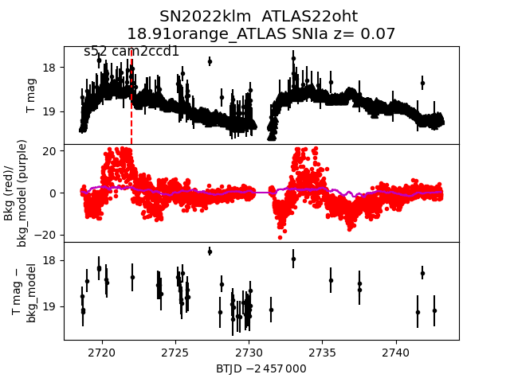
2022myl
 2022kzz
2022kzz
 2022kwf
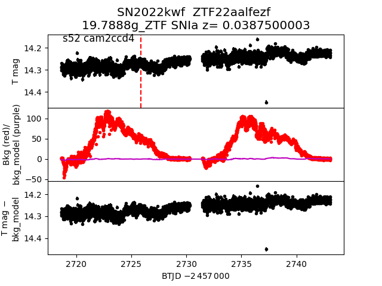
2022lce
2022kwf
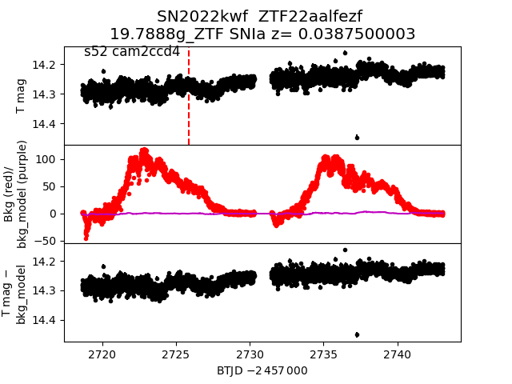
2022lce
 2022lqo
2022lqo